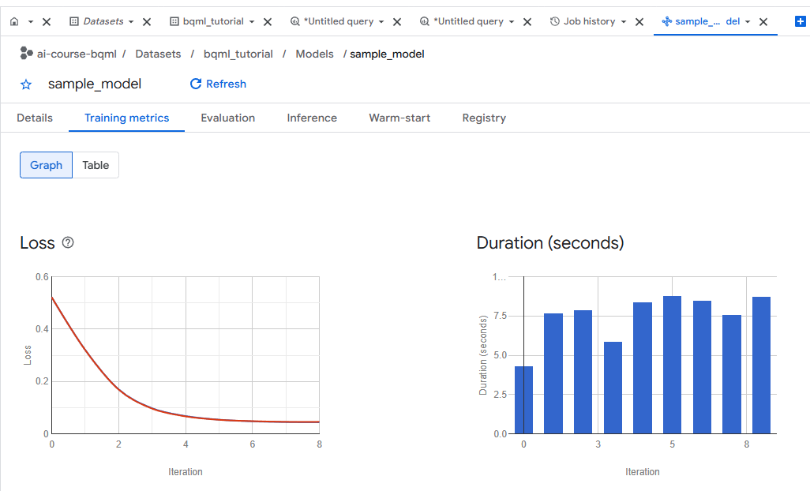
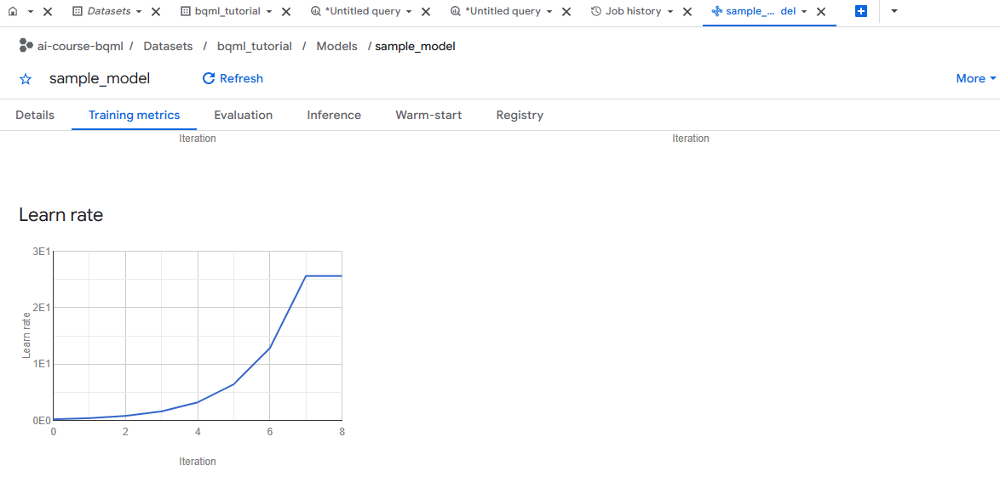

← Back to Google Lab 4 README · View Plain-English Evaluation Metrics Tutorial · Open Combined Offline Lab Guide
1. Overview: What Happened When You Ran CREATE MODEL?
In Google Lab 4, you trained a binary logistic regression model on 11 months of Google Merchandise Store sessions (August 2016 to June 2017) using this SQL statement:
CREATE OR REPLACE MODEL `bqml_tutorial.sample_model`
OPTIONS(model_type = 'logistic_reg') AS
SELECT
IF(totals.transactions IS NULL, 0, 1) AS label,
IFNULL(device.operatingSystem, "") AS os,
device.isMobile AS is_mobile,
IFNULL(geoNetwork.country, "") AS country,
IFNULL(totals.pageviews, 0) AS pageviews
FROM `bigquery-public-data.google_analytics_sample.ga_sessions_*`
WHERE _TABLE_SUFFIX BETWEEN '20160801' AND '20170630';When CREATE OR REPLACE MODEL finishes and you open ai-course-bqml → Datasets → bqml_tutorial → Models → sample_model → Training metrics, BigQuery displays three graphs across iterations 0 through 8:
1. Loss (Line Chart)
What it measures: How wrong the model's probability predictions are (Log Loss / Cross-Entropy) at each training iteration.
Goal: Should drop steeply and flatten near the bottom (converge).
2. Duration (Bar Chart)
What it measures: How many wall-clock seconds BigQuery spent computing gradient updates in each iteration.
Goal: Consistent, predictable compute time (~4.3s to ~8.8s per iteration).
3. Learn Rate (Line Chart)
What it measures: The step size (learn_rate) chosen by BigQuery ML's automatic LINE_SEARCH strategy at each iteration.
Goal: Automatically doubles when steps consistently reduce loss.


0 to 8.2. Graph 1: Loss (Log Loss Across Iterations)
- X-axis (
Iteration): The gradient-descent step number, from Iteration0to Iteration8(9 total iterations). By default, BigQuery ML allows up tomax_iterations = 20, but stops early as soon as relative loss improvement falls belowmin_rel_progress = 0.01(1%). - Y-axis (
Loss): Formodel_type = 'logistic_reg', this is Log Loss (Binary Cross-Entropy):
whereLog Loss = - (1 / N) * SUM[ y * log(p) + (1 - y) * log(1 - p) ]yis the true label (0= no purchase,1= purchase) andpis the model's predicted probability of a purchase.
How to Read the Curve in Your Screenshot
- Iteration 0 (Loss ≈ 0.52): Before the weights are tuned, the model starts near uniform/uninformed probabilities. A binary classifier that guesses 50/50 on every row has a theoretical log loss of
-ln(0.5) = 0.693; after the initial step at Iteration 0, the loss is around0.52. - Iterations 1 to 3 (Loss drops from ~0.52 → ~0.31 → ~0.17 → ~0.095): The steepest drop happens here. Because roughly 98.5% of sessions have no transaction (
label = 0), the model rapidly learns the baseline purchase rate and the strongest signals (such as highpageviewsand desktop vs. mobile). - Iterations 4 to 8 (Loss flattens from ~0.068 → ~0.046): The curve bends into a smooth "elbow" and levels out just below
0.05(around0.046). - Why Training Stopped at Iteration 8: Between Iteration 7 and Iteration 8, the loss changed by less than 1% (
min_rel_progress). BigQuery ML automatically declared convergence and stopped at Iteration 8 instead of wasting time and compute running all 20 iterations.
3. Graph 2: Duration (Seconds per Iteration)
- X-axis (
Iteration): Each bar corresponds to one training iteration (0through8). - Y-axis (
Duration (seconds)): How long that single iteration took to execute in BigQuery's distributed compute engine.
How to Read the Bars in Your Screenshot
- Iteration 0 (~4.3 seconds): The initial pass sets up the starting weights and computes the initial loss.
- Iterations 1 to 8 (~5.8 to ~8.8 seconds per bar): Each subsequent bar takes roughly 6 to 9 seconds because BigQuery evaluates the gradient across ~800,000+ training sessions (August 2016 – June 2017) and runs a line search to pick the best step size.
- Total Training Compute Time: Summing the 9 bars gives roughly 65–70 seconds of pure iteration compute (plus query initialization, feature encoding, and train/eval split overhead).
boosted_tree_classifier) will take.
4. Graph 3: Learn Rate (Line Search Step Size)
- X-axis (
Iteration): Training iteration0through8. - Y-axis (
Learn rate): Displayed in scientific notation:0E0= 01E1= 10 (1 × 101)2E1= 20 (2 × 101)3E1= 30 (3 × 101)
Why Does the Learn Rate Go Up Exponentially (0.1 → 0.2 → 0.4 → ... → 25.6)?
Students who have used PyTorch or TensorFlow often expect learning rates to decay over time and are surprised to see BigQuery ML's learn rate climb to 25.6! Here is why:
- Default Strategy is
LINE_SEARCH: When you do not specifylearn_rate_strategyinOPTIONS(...), BigQuery ML defaults tolearn_rate_strategy = 'LINE_SEARCH'with an initialls_init_learn_rate = 0.1. - Doubling on Successful Steps: At each iteration, BigQuery ML tests candidate step sizes along the gradient direction. When a step successfully decreases the loss, the line-search algorithm doubles the learning rate for the next iteration so it can traverse flat regions of the loss surface faster:
Iteration 0: 0.1 (0.01E1) Iteration 1: 0.2 Iteration 2: 0.4 Iteration 3: 0.8 Iteration 4: 1.6 Iteration 5: 3.2 Iteration 6: 6.4 Iteration 7: 12.8 → 25.6 (2.56E1) Iteration 8: 25.6 (plateaus as convergence is reached) - Plateau at Iteration 7–8 (
25.6, just above2.5E1): Near the minimum of the logistic loss curve, the gradient becomes very small (flat slope). A larger multiplier (25.6) times a tiny gradient still produces a safe, small parameter update, and at Iteration 8 the line search keeps the same25.6rate before stopping.
OPTIONS(model_type = 'logistic_reg', learn_rate_strategy = 'CONSTANT', learn_rate = 0.01).
For sample_model, LINE_SEARCH converged cleanly in 8 iterations without any manual tuning.
5. Querying the Exact Numbers with ML.TRAINING_INFO
You can view these exact values either by clicking the Table toggle button next to Graph at the top-left of the Training metrics tab, or by running Query #6 from bqml.sql:
SELECT
iteration,
ROUND(loss, 4) AS training_loss,
ROUND(eval_loss, 4) AS evaluation_loss,
ROUND(duration_ms / 1000.0, 2) AS duration_seconds,
learn_rate
FROM ML.TRAINING_INFO(MODEL `bqml_tutorial.sample_model`)
ORDER BY iteration ASC;| Iteration | Approx. Loss | Approx. Duration (s) | Learn Rate | What Is Happening |
|---|---|---|---|---|
| 0 | ~0.520 | ~4.3 s | 0.1 / 0.2 | Initial weights evaluated; loss starts high (~0.52). |
| 1 | ~0.315 | ~7.6 s | 0.4 | First major gradient step; learns baseline class imbalance. |
| 2 | ~0.172 | ~7.8 s | 0.8 | Rapid loss reduction; line search doubles step size. |
| 3 | ~0.098 | ~5.8 s | 1.6 | Loss drops below 0.10. |
| 4 | ~0.068 | ~8.4 s | 3.2 | Entering the "elbow" of the loss curve. |
| 5 | ~0.055 | ~8.8 s | 6.4 | Fine-tuning feature weights (pageviews, country, os, is_mobile). |
| 6 | ~0.049 | ~8.5 s | 12.8 | Gradients are now very small; step multiplier doubles again. |
| 7 | ~0.047 | ~7.5 s | 25.6 | Near minimum log loss (~0.047). |
| 8 | ~0.046 | ~8.7 s | 25.6 | Relative improvement < 1% (min_rel_progress); training stops automatically. |
6. Quick Diagnostic Checklist for Students
| Question | What to Check in the 3 Graphs | Verdict for sample_model |
|---|---|---|
| Did the model converge? | Does the Loss curve decrease smoothly and flatten out before hitting the 20-iteration cap? | Yes — converged at Iteration 8 with Loss ≈ 0.046. |
| Does a low Loss (~0.046) mean the model finds every buyer? | No! When 98.5% of sessions have 0 purchases, predicting small probabilities gives a very low average Log Loss even if recall at the 0.5 threshold is low (~11.1%). | Always check the Evaluation tab / ML.EVALUATE for Precision, Recall, and ROC AUC after checking Loss. |
| Was compute time stable? | Are the Duration bars roughly uniform (~4–9s) without a runaway spike? | Yes — ~4.3s to ~8.8s per iteration. |
| Did automatic line search work? | Did Learn rate scale smoothly without causing the Loss curve to spike upward? | Yes — doubled cleanly up to 25.6 (2.56E1) and plateaued. |